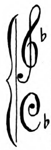

The nineteenth century has produced a new school of music, bearing about the same relation to the genuine article, which the hash or stew of Monday does to the joint of Sunday.
We allude of course to the prevalent practice of diluting the works of earlier composers with washy modern variations, so as to suit the weakened and depraved taste of this generation: this invention is termed “setting” by some, who, scorning the handsome offer of Alexander Smith, to “set this age to music,” have determined to set music to this age.
Sadly we admit the stern necessity that exists for such a change: with stern prophetic eye we see looming in the shadowy Future the downfall of the sister Fine Arts. The National Gallery have already subjected some of their finest pictures to this painful operation: Poetry must follow.
That we may not be behind others in forwarding the progress of Civilization, we boldly discard all personal and private feelings, and with quivering pen and tear-dimmed eye, we dedicate the following composition to the Spirit of the Age, and to that noble band of gallant adventurers, who aspire to lead the Van in the great March of Reform.
The Dear Gazelle. Arranged with Variations.
|  | “I never loved a dear gazelle,” |
“To glad me with his soft black eyes,” | |
“But when he came to know me well,” | |
“And love me, it was sure to die” |
Ch: Ch: 1855.